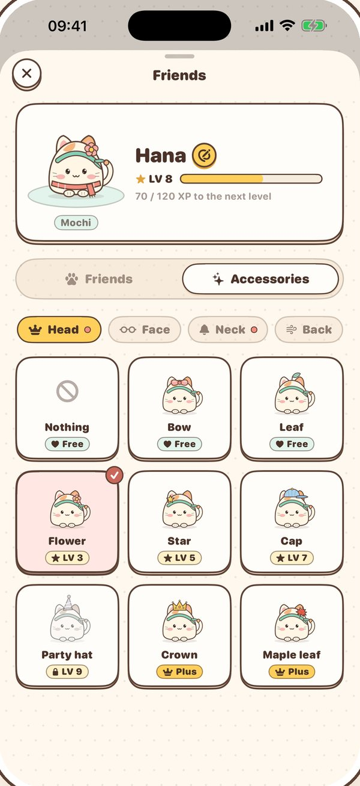
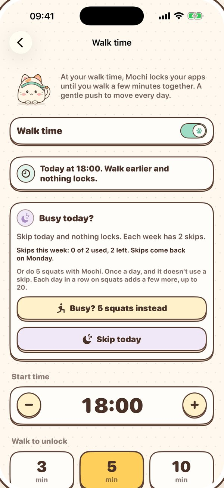
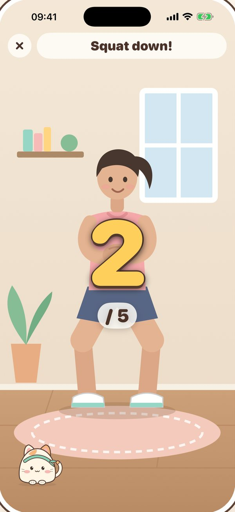
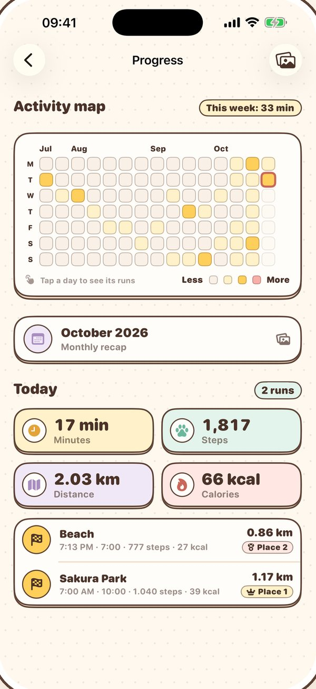
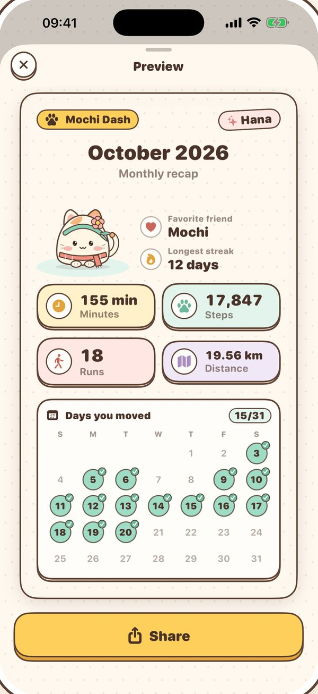

Walk in place.
Race kawaii friends.
Prop up your iPhone, step back, and walk in front of the camera. Mochi the calico cat runs on screen as fast as you move. A few gentle minutes a day, right in your living room.
- Free to start
- No account
- No data collected
- 10 languages

- 1–15minutes a session
- 9friends to meet
- 6picture-book tracks
- 32accessories
- 0data collected
Lift your knees, Mochi runs.
The front camera reads your steps and knee lifts from 2 to 3 meters away. Walk faster and your friend speeds up. Hop over puddles and logs, grab a star pad, and race up to three friends, or take a calm solo walk.
- Big numbers and a voice coach you can follow from across the room
- Every session is a gentle walk, 1 to 15 minutes
- Video is read on your iPhone and never saved or sent

Every level opens something new.
Start with Mochi, then meet Bun, Kiko, Poppy, Pando and Ichigo as you level up. Pick a bow, goggles, a scarf or a hero cape: eight pieces for each of head, face, neck and back, and every friend can wear them.
- Sakura Park, Beach, Candy World and Snow Mountain to unlock
- Win races to befriend Bun sooner
- Nothing to buy to level up: it's earned by moving


Your apps open after a short walk.
Pick a time, say 6 pm, and the minutes to walk. From then until midnight, the apps you choose stay locked until you walk with Mochi. Busy day? Do a few squats instead, or use one of two skips a week.
- Walk earlier in the day and nothing locks
- Calls and the apps you allow always work
- Built on Apple's Screen Time, off any time


A streak that forgives a busy day.
See every day you moved on the activity map, with minutes, steps, distance and calories. Your friend naps in a Home Screen widget until today's walk, and a monthly recap picture is ready to share.
- A missed day doesn't break your streak right away
- Share pictures with a preview first
- Save runs to Apple Health with Mochi Plus
Start in ten seconds
No gym, no gear, no sign-up.
Prop up your phone
Stand it upright at about hip height, with the screen facing you, in a well-lit room.
Step back
Move 2 to 3 meters away until your whole body fits in the frame. Mochi tells you if you need to move.
Walk in place
After a 5-second count, lift your knees and go. In a race, lift them high to hop over puddles and logs.
Free every day. Plus if you like.
Practice is never limited. Plus never skips levels: friends and tracks are earned by moving.
Free
- Races and solo walks, as many as you like
- Levels, streaks and the activity map
- Every friend, track and accessory you earn
- Small and medium Home Screen widgets
- Backup to move to a new iPhone
Mochi Plus
- Walk time: your apps open after a short walk
- Night City and Maple Forest tracks
- Toro, Puddi and Kuri, three crown friends
- Eight crown accessories and five app icons
- Lock Screen and large widgets
- A rest day every week that keeps your streak
- Monthly recap, full history and Apple Health
Monthly, yearly with a free trial, or a one-time lifetime purchase, through the App Store.
Questions
Can't find your answer? Email us.
Does the camera record me?
No. Mochi Dash uses Apple's on-device Vision framework to find your body pose in each camera frame. Frames are never saved, uploaded or shared. The app has no account and no server of its own.
How far from the phone should I stand?
About 2 to 3 meters, so your head and knees are in view. Your ankles can be hidden. Good light in front of you helps a lot.
Can I use it without the camera?
No. Mochi Dash follows your movement through the camera, so the camera is required. If you said no earlier, turn it on in Settings › Mochi Dash › Camera.
How are distance and calories worked out?
From your step rate, your height and your weight (if you enter them in Settings). They are estimates for fun and motivation, not medical measurements.
How do I restore or cancel Mochi Plus?
To restore, open the Mochi Plus screen and tap Restore purchases. To cancel a subscription, go to Settings › your name › Subscriptions on your iPhone at least 24 hours before it renews.
What is Walk time?
A Mochi Plus option for a little daily push. Pick a time, say 6 pm, the minutes to walk (3, 5 or 10) and the apps you still need. From that time until 23:59, your other apps stay locked until you walk with Mochi, or use one of two skips each week. Short on time? A few squats with Mochi open them too: 5, a few more each day in a row, up to 20, and back to 5 each week. Once a day, without using a skip. Busy day? Skip it ahead of time and nothing locks; skips come back at the start of each week. Walk earlier in the day and nothing locks either. It uses Apple's Screen Time, and you can turn it off any time. Allow notifications so Mochi can tell you when walk time starts; without them the lock still works, and you open Mochi Dash from your Home Screen to walk.
How do I move my progress to a new iPhone?
There is no account, so progress lives on your iPhone. In Settings › Backup, tap Export backup and save the file to iCloud Drive or Files. On the new iPhone, install Mochi Dash, then tap Import backup and pick that file. It's free for everyone.
Which languages are supported?
English, 简体中文, Français, Deutsch, Bahasa Indonesia, 日本語, 한국어, Português (Brasil), Español and Tiếng Việt. You can switch in Settings › Language.
Move safely. Use a clear, non-slip floor with nothing around you, and wear proper shoes. Stop if you feel pain, dizziness or shortness of breath. If you have a health condition, are pregnant, or haven't exercised in a while, check with a doctor first.